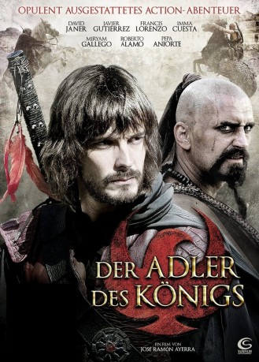

#10691 Der Adler des Königs
Alternativ: Red Eagle (Englischer Titel)
 
 IMDB-Wertung: 5.0 / 10
IMDB-Wertung: 5.0 / 10  Metascore: 0
Metascore: 0 
17. Jahrhundert in Spanien. In seinem bürgerlichen Leben ein unscheinbarer Lehrer, verwandelt sich Gonzalo des Nachts in einen maskierten Helden, der auf der Seite des Guten steht und seinem König mutig und jederzeit ein treuer Diener ist. Als zu einer wichtigen Konferenz neben dem französischen Sonnenkönig Ludwig XIV auch die gekrönten Operhäupter und Abgesandten Europas auf dem spanischen Hof eintreffen, entbrennt eine große Verschwörung gegen das spanische Königreich. Hinter hervor gehaltener Hand planen die Widersacher des Königs das Unfassbare, die Sicherheit des Landes und das Leben des spanischen Königs ist in Gefahr. Der Adler des Königs ist der Einzige, der den König retten kann.
Jahr: 2011
Dauer: 118 Minuten
FSK: 12
Land: Spanien Studio: Sunfilm EntertainmentTonspuren:
Untertitel:
Auflösung: 720p (1280x544) Größe: 3676 MB
Genre: Action, Abenteuer, Geschichte
Regisseur: José Ramón Ayerra
Drehbuch: Guillermo Cisneros, Pilar Nadal, Juan María Ruiz Córdoba
Soundtrack: Daniel Sánchez de la Hera
Darsteller:
- David Janer als Águila Roja / Gonzalo
 Javier Gutiérrez als Satur
Javier Gutiérrez als Satur- Inma Cuesta als Margarita
 Roberto Álamo als Juan
Roberto Álamo als Juan- Xabier Elorriaga als Felipe IV
- José Ángel Egido als Cardenal
- Patrick Criado als Nuño
- Stany Coppet als Mosquetero
 William Miller als Capitán Inglés
William Miller als Capitán Inglés- Joan Carles Suau als Alfonso VI
 Itziar Castro als Criada Limpiadora
Itziar Castro als Criada Limpiadora- Francis Lorenzo als Comisario
- Miryam Gallego als Marquesa
- Pepa Aniorte als Catalina
- Santiago Molero als Cipri
- Guillermo Campra als Alonso
- Martina Klein als Beatriz
- Mariano Peña als Antoine
- Antonio Molero als Padre Mateo
- Xavier Lafitte als Luis XIV
- Joan Crosas als Lope
- Jean Dominikowski als Cosaco
- Frank Crudele als Alejandro VII
- Inma Sancho als Luisa de Guzman
- Simon Cohen als Carlos II
- Miko Jarry als Capitan Francès
- José Ramón Iglesias als Médico
- Eliana Álvarez als Reina de España
- Carlos De Mateis als Obispo
- Giselle Calderón als Esclava Hindú
- Juan Carlos López Agustino als Carcelero
- Álex Navarro als Lugarteniente
- Araceli Vara als Campesina
- Alex Amaral als Obispo portugués (uncredited)
- Toni Rodriguez als Obispo Inglés / Sargento Inglés (uncredited)
- Maya Simón als Mesonera (uncredited)
Datei: X:\NEU\Adler des Königs, Der (2011, FSK12, 1280x544).mkv seit 22.02.2019
 Es gibt insgesamt 187 Filme in der Gruppe 'NEU'
Es gibt insgesamt 187 Filme in der Gruppe 'NEU'